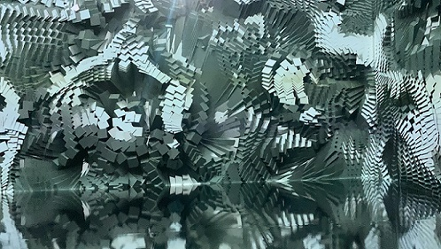

Exhibition
In the weeks leading up to my departure from the U.S., I saw an announcement about an opening of an exhibition at the Dongdaemun Design Plaza. The exhibition was going to remain open from late January to mid-March. I managed to book a reservation (before it was "sold out") to go see the exhibition during my first week in Korea. Even though it was free, they only had limited openings due to Covid-19.
DDP

In order to get to the location on time (in case I get lost), I left quite early in the day and headed for the subway station. It was probably the cleanest and safest subway station I've ever seen. There also seems to be some vending machines at every stop.
Beyond the Scene
A still from Beyond the Scene, an artwork presented at the exhibition. It was more of a performance as visitors were situated in a (interestingly shaped room, I almost missed the room and left), watching the projection of a video on the walls and floor of the room.